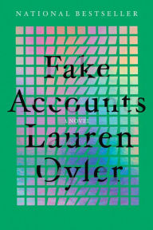
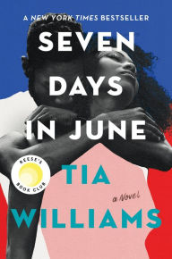
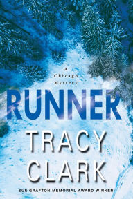

Monthly Pick Fiction Books

The Stranger in the Lifeboat
~ by Mitch Albom
What would happen if we called on God for help and God actually appeared? In Mitch Albom's profound new novel of hope and faith, a group of shipwrecked passengers pull a strange man from the sea. He claims to be "the Lord." And he says he can only save them if they all believe in him.
The Hare
~ by Melanie Finn
The Hare is an affecting portrait of Rosie Monroe, of her resilience and personal transformation under the pin of the male gaze....
Every Last Fear
~ by Alex Finlay
In one of the year's most anticipated debut psychological thrillers, a family made infamous by a true crime documentary is found dead, leaving their surviving son to uncover the truth about their final days....

 3.0/5.0
3.0/5.0
Fake Accounts
~ by Lauren Oyler
On the eve of Donald Trump's inauguration, a young woman snoops through her boyfriend's phone and makes a startling discovery: he's an anonymous internet conspiracy theorist, and a popular one at that. Already fluent in internet fakery, irony, and outrage, she's not exactly shocked by the revelation. Actually, she's relieved--he was always a little distant--and she plots to end their floundering relationship while on a trip to the Women's March in DC. But this is only the first in a series of bizarre twists that expose a world whose truths are shaped by online lies.

4.9/5.0
Seven Days in June
~ by Tia Williams
Seven days to fall in love, fifteen years to forget, and seven days to get it all back again....
Good Company
~ by Cynthia D'Aprix Sweeney
Flora Mancini has been happily married for more than twenty years. But everything she thought she knew about herself, her marriage, and her relationship with her best friend, Margot, is upended when she stumbles upon an envelope containing her husband's wedding ring--the one he claimed he lost one summer when their daughter, Ruby, was five....

4.3/5.0
'
Runner
~ by Tracy Clark
With a hard-charging, ripped from the headlines plot, Chicago-based journalist and award-winning author Tracy Clark explores timely issues around race, class, and addiction, as Black homicide cop-turned P.I. Cass Raines searches for a runaway teen--and unearths a twisted world of misdirection and lies....The Funny Thing about Norman Foreman
~ by Julietta Henderson
Julietta Henderson's delightfully funny and tender debut takes us on a road trip with a mother and son who will live in the reader's heart for a long time to come, and teaches us that--no matter the odds--we must always reach for the stars.Cold Wind: A Mystery
~ by Paige Shelton
Unable to escape her journalistic roots, Beth is determined to answer the questions that keep arising: Are the mysterious girls and the frozen body connected? Can Randy possibly be involved?Black Buck
~ by Mateo Askaripour
An unambitious twenty-two-year-old, Darren lives in a Bed-Stuy brownstone with his mother, who wants nothing more than to see him live up to his potential as the valedictorian of Bronx Science. But Darren is content working at Starbucks in the lobby of a Midtown office building, hanging out with his girlfriend, Soraya, and eating his mother's home-cooked meals....
We Were Never Here
~ by Andrea Bartz
Emily is having the time of her life--she's in the mountains of Chile with her best friend, Kristen, on their annual reunion trip, and the women are feeling closer than ever. But on the last night of the trip, Emily enters their hotel suite to find blood and broken glass on the floor. Kristen says the cute backpacker she brought back to their room attacked her, and she had no choice but to kill him in self-defense....Harlem Shuffle
~ by Colson Whitehead
Harlem Shuffle's ingenious story plays out in a beautifully recreated New York City of the early 1960s. It's a family saga masquerading as a crime novel, a hilarious morality play, a social novel about race and power, and ultimately a love letter to Harlem.Girl a
~ by Abigail Dean
She thought she had escaped her past. But there are some things you can't outrun....Foregone
~ by Russell Banks
A searing novel about memory, abandonment, and betrayal from the acclaimed and bestselling Russell Banks.The Plot
~ by Jean Hanff Korelitz
Hailed as breathtakingly suspenseful, Jean Hanff Korelitz's The Plot is a propulsive read about a story too good not to steal, and the writer who steals it.